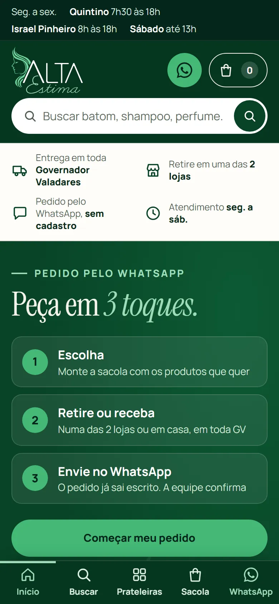

01 / site + loja online01 / website + online store
Alta Estima Cosméticos
- problemaproblem
- Duas lojas em Governador Valadares (MG) que vendem por WhatsApp e Instagram, sem catálogo online.Two stores in Governador Valadares (Brazil) selling over WhatsApp and Instagram, with no online catalogue.
- o que fizwhat I did
- Site com loja. O cliente escolhe a loja, monta a sacola e vê a prévia da mensagem antes de enviar pelo WhatsApp. Também dá para comprar por necessidade (pele oleosa, cabelo cacheado) ou por rotina pronta.A website with a store. The customer picks a store, builds a bag and sees a preview of the message before sending it on WhatsApp. They can also shop by need (oily skin, curly hair) or by ready-made routine.
- resultadoresult
- Pedido em 3 toques, sem cadastro. 38 produtos com ficha e modo de usar, 4 rotinas, barra fixa de sacola no celular. Versão 2 de 31/10/2026.Order in 3 taps, no sign-up. 38 products with detail page and how-to-use, 4 routines, fixed bag bar on mobile. Version 2 shipped 31 Oct 2026.
- pendentepending
- Preços e fotos reais dos produtos, que dependem da loja.Real prices and product photos, which depend on the store.
- stack
- HTML, CSS e JS puro, sem framework.Plain HTML, CSS and JS, no framework.

